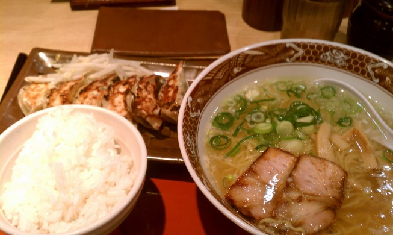

滋賀・福井旅行記(2013/03/12-2013/03/16)
その3 の続き．
03/15
日付が変わる頃就寝して，8時半に一旦起きて30分ほど二度寝する． やはり昨日の疲れが……．
やりたいことはほとんどやったので，この日はほぼノープラン． とりあえず武生を探索してみるか，と思い電車に乗る．
電車に乗ったら眠くなって面倒になったので，終点の敦賀まで行って適当に敦賀観光することにする．
敦賀着． とりあえず観光案内所でおすすめのスポットを聞く． バスのフリーパスを買うかレンタサイクルがおすすめらしいので，フリーパスで回ることにする．
……と思ってたら，バスに乗り込む時点で万札しか持っておらず，バス内でフリーパスを買おうとしたらお釣りが出なくて詰む． 出発時間ギリギリだったし，仕方なく諦めて先に食事することにした． 朝から何も食べてなかったし．
敦賀駅から歩いて10分くらいの所にある，ヨーロッパ軒分店でソースカツ丼（メニューは単にカツ丼）を食べた． これも先日の居酒屋のおっちゃんに，福井と言えばソースカツ丼だよと教えてもらったため．
写真だとカツは2枚しか見えないけど，実際には3枚乗っている． カツは（たぶん）ヒレ肉で3枚ともちゃんと脂身が付いていて，衣はトンカツというよりフライのような味付きの衣で，揚げたてのサクサク． ここに甘めのウスターソースがかかっているだけのシンプルな丼ながら，ソースがカツともご飯ともぴったりが合っていて，ちゃんと豚肉の脂身も味わえるし大変おいしい． 北海道で食べた帯広の豚丼もおいしかったし，豚肉＋ご飯の料理はシンプルでもハズレがない． ご飯も結構多く，シンプルでも850円なら納得のメニューだった．
食事したらエネルギーが回復してきたので，レンタサイクルで回ることにした．
まずは気比神宮．
おみくじを引いたら，「旅行 取り止めて日を改めなさい」と言われた．どうしろと……．
そのあとは気比の松原に行く． 道中，晴明神社という謎の神社があった．
安倍晴明の祈り石というのが置いてあった． おばちゃんが番をしていて，これから気比の松原に行くと言ったら，ただの松林でそんな面白くないよと言われた．
気比の松原． こんな景色がずっと続き，確かにただの松林である……．
海岸に寄ったりしてたけど，すぐに松原は抜けてしまった． 次は金ヶ崎に行ってみる．
よく知らないが，信長がここで追い詰められて退却したという曰くのある地らしい． 基本的には山道．
麓から15分くらいの所にある月見が丘からの景色． 確かに景色は良い．
ここから1kmくらいのところに展望台があると書いてあったので，そっちに向かってみる． 道中，一度坂を下り始めてちょっと不穏な雰囲気が漂っていると思ったら，途中から急な上り階段の連続になり始めた． しばらく歩いてたが，頂上にたどり着いても体力が尽きそうだったので計画を変更し，引き返すことにした．
麓まで引き返してから，観光案内所で聞いた温泉に行ってみることにした． 自転車で走っていると，これもまた途中から上り坂になり始める． さすがにママチャリだときつく，汗だくになりながら温泉に到着．
温泉に入ったら疲れが取れた． 昨日の芦原はいったい何だったのか……．
駅前に帰ってレンタサイクルを返却し，近くの居酒屋に行く． 敦賀名物のへしこを食べた． 佃煮のような味で，日本酒によく合う． 酒とかおでんに値段が書いてない店だったけど，3000円くらいと思って適当に頼んでたら予算を1000円ほどオーバーしてしまった． まあ安居酒屋の感覚なのが間違いで，相場はこんなもんなのかもしれない．日本酒おいしかったし，
敦賀周辺のホテルは高いので，長浜まで出てネカフェに泊まることにした． 長浜に着いた時点で20時くらいで，ちょっと時間が余ってるので夜の琵琶湖を見に行った．
一応写真も撮ったけど，写真だと暗くて何も分からない．
03/16
最終日． この日は家に帰るのが目標．
ネカフェのナイトパックが終わる7時頃に出発し，朝の琵琶湖を見に行く．

朝の琵琶湖．なぜか知らんが鳥がたくさん集まっている．

改札を入る． 18きっぷのスタンプ欄が全部埋まった．
このあとはずっと電車を乗り継いでいき，途中の浜松で昼食のため一旦降りる．

うなぎでも食べようかと思ったけど，流石にどこも高い． うなぎの他には浜松餃子というのが有名らしい．初めて聞いた． B級グルメ感に素晴らしく惹かれるので，駅ビルの適当な店に入ってみる．

ラーメン餃子セット． ラーメンはそこまででもなかったけど，入っているチャーシューと餃子はおいしかった． チャーシューは脂身がトロトロで，味も染みている． 餃子は皮がパリパリに焼かれていて，食べると甘い肉汁が染みだしてくる． 餃子とご飯だけで十分にいけると思った．

浜松駅であげ潮を買って，もう一度電車に乗って家まで帰った．